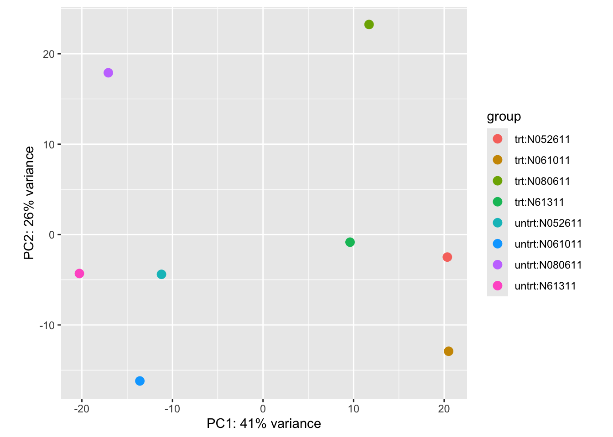

install.packages("DESeq2")Digging deeper
We have 2 different conditions (treated with dexamethasone vs untreated control) and 4 different cell strains, and we want to explore how each of these could contribute to the overall gene expression profile of the sample.
Principal component analysis
A way to visualise sample-to-sample distances is a principal-components analysis (PCA). In this ordination method, the data points (i.e., here, the samples) are projected onto the 2D plane such that they spread out in the two directions which explain most of the differences in the data. The x-axis is the direction (or principal component) which separates the data points the most. The amount of the total variance which is contained in the direction is printed in the axis label.
In simple turns, we are making a plot that shows us how similar or different each sample, taking in to account all of the gene expression. A PCA plot can help us see the biggest sources of biological variation and help determine which has more of an affect on the gene expression – whether that be the treatment type, the cell type or something else (e.g., an unintended batch effect)
library(DESeq2)
library(tidyverse)We will use DEseq to to generate a special type of object in R, which will be called dds. This object can hold a lot of complex data types all in one. We will use it later for differential gene expression.
# factorise coldata columns to make R see each column as groups
coldata$dex <- relevel(factor(coldata$dex), ref = "untrt")
coldata$cell <- factor(coldata$cell)
# now make the special deseq object, loading in counts and metadata and choosing the design
dds <- DESeqDataSetFromMatrix(countData = countdata,
colData = coldata,
design = ~ cell + dex)We can use the head() function to have a look at the counts in dds
head(counts(dds)) S1-Un S2-Tr S3-Un S4-Tr S5-Un S6-Tr S7-Un S8-Tr
ENSG00000000003 679 448 873 408 1138 1047 770 572
ENSG00000000005 0 0 0 0 0 0 0 0
ENSG00000000419 467 515 621 365 587 799 417 508
ENSG00000000457 260 211 263 164 245 331 233 229
ENSG00000000460 60 55 40 35 78 63 76 60
ENSG00000000938 0 0 2 0 1 0 0 0These are still the same as our original count data, we can check that by also running head on ‘countdata_fordds’ too.
head(countdata) S1-Un S2-Tr S3-Un S4-Tr S5-Un S6-Tr S7-Un S8-Tr
ENSG00000000003 679 448 873 408 1138 1047 770 572
ENSG00000000005 0 0 0 0 0 0 0 0
ENSG00000000419 467 515 621 365 587 799 417 508
ENSG00000000457 260 211 263 164 245 331 233 229
ENSG00000000460 60 55 40 35 78 63 76 60
ENSG00000000938 0 0 2 0 1 0 0 0The creation of our dds “DESeqDataSeq” object earlier did not actually do anything yet to the data, it essentially loaded in and prepped it for further analysis.
As the counts in dds are raw counts, we need to first transform the counts for visualisation. We will use a function called vst() or variance stabilising transformation. This is a common type of transformation to use for visualising RNAseq data. We will make it in a new object called vsd, which will be a “DESeqTransform” object.
vsd <- vst(dds)Now we can make our PCA plot, using an all-in-one plotting function called plotPCA().
plotPCA(vsd, intgroup = c("dex", "cell"))
If the pca code above doesn’t work, try this:
pca_data <- plotPCA(vsd, intgroup = c("dex", "cell"), returnData = TRUE)
percentVar <- round(100 * attr(pca_data, "percentVar"))
ggplot(pca_data, aes(
x = PC1,
y = PC2,
colour = dex,
shape = cell
)) +
geom_point(size = 3) +
xlab(paste0("PC1: ", percentVar[1], "% variance")) +
ylab(paste0("PC2: ", percentVar[2], "% variance")) +
theme_classic()This plot shows us that 41% of the variance is explained by principal component 1. We can see that this PC separates our two conditions, with all our treated samples on the right and our untreated samples on the left. We can also see that principal component 2 explains 26% of the variance, which explains a lot of the cell-specific genetic expression. The two samples from cell type ‘N080611’ appear to be the most different from the other cell types, sitting further away at the top of the plot. Together these two PCs explain 67% of the variance in gene expression - which is quite a lot! We can keep going further through the PCs – PC3, PC4, PC5 etc – and plot them too, but often the first PCs explain most of the variance.
Conclusion: treating with dexamethasone has a large effect on the gene expression, but the specific cell type also plays a role in the differences observed.